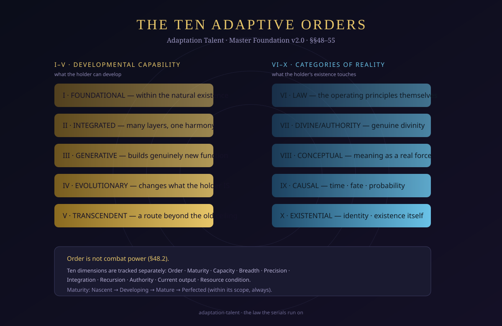
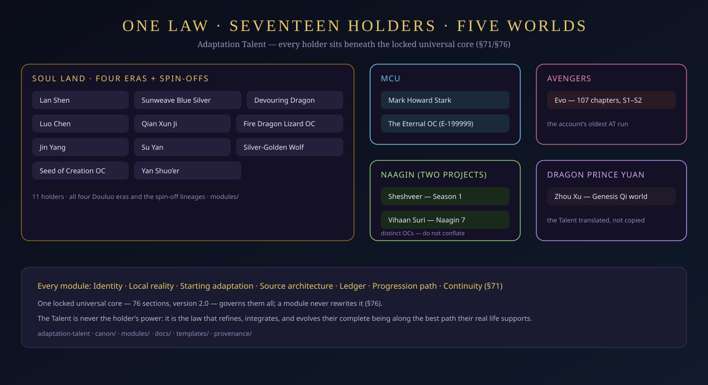

Adaptation Talent is an innate, pure, inseparable, non-sentient existential principle present from conception that continuously uses the holder's real existence, experience, information, resources, intentions, recovery, relationships, and accessible reality to preserve, refine, integrate, personalize, and evolve the holder's complete being along the best presently supportable path compatible with identity, free will, deepest desires, chosen bonds, and actual conditions. — Master Foundation v2.0, §2 · the definition of record

